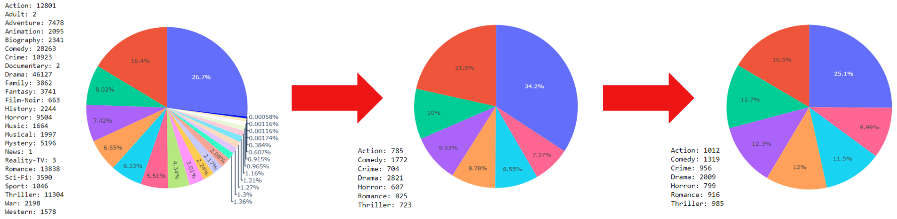

About
This site explains a natural language processing (NLP) group project done in collaboration with rogerchenrc and laviniafr. In this we tested different NLP techniques and model architectures to create a CI/CD pipeline to train and deploy a multi-label classifier. The classifier was trained on dataset of movie descriptions to predict the top fitting genre(s). The state of the best trained model was then saved to file and deployed on a custom built web server as demonstrated in the video below:
Data
We decided to use the IMDb movies extensive dataset from Kaggle. This dataset contains 84,983 samples providing a sufficient number to train a robust classifier. Although each film has many attributes such as year of release and director, we only required the original title, description and list of one to three genres to use as training labels. Some pre-processing was therefore required to remove samples missing this information and to remove unnecessary attributes.

The dataset was then sampled

Classifier Testing
When given a sample, the model outputs one to three genres with a percentage corresponding to its relevance for each one.
Topic Modelling
Latent Dirichlet Allocation (LDiA)
In

Latent Semantic Analysis
Si

Topic Modelling Code
Contributions
Tom
- CI/CD pipeline development
- Model training, testing and optimization
- Hosting the selected model on the backend of the web application
- Creation of this site
Roger
- Backend development of the Flask web application
- Hosting the app prototype on Heroku
- Functional testing of the application
Lavinia
- Research of web service hosting options
- Frontend development of the web application
- Creation of video demonstrations